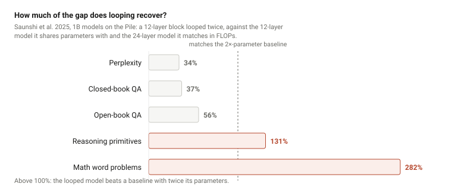

Looped transformers: what a recurrence is worth
On weight-tied depth, the exchange rate between parameters and FLOPs, and why the loop turns out to be an architecture decision rather than an inference-time dial.
Table of Contents
Here is a result that should be strange. Ouro-1.4B, a 1.4-billion-parameter base model from a ByteDance Seed-led collaboration, scores 82.4 on MATH500 against Qwen3-4B-Base’s 59.6 — a model with three times its parameters and five times its training tokens. On MMLU the same two models go the other way: 67.4 against 73.2 (Zhu et al., 2025, Table 7). It wins by 22.8 points on the maths benchmark and loses by 5.8 on the knowledge one.
The architecture behind that split is the simplest idea in the field: take a block of layers and run it more than once. Same weights, again. Drag the slider.
In code the whole idea is one for loop. This is the Huginn layout — a prelude
computed once, a core applied r times with the input re-injected on every pass, a coda —
with Block an ordinary pre-norm attention-plus-MLP layer. Small enough to run on a
laptop, and it does — open the block to see it.
Code — a looped language model in PyTorch, runs on a laptop (34 lines)
class LoopedLM(nn.Module):
"""Prelude -> core x r -> coda, the Huginn layout (Geiping et al., 2025)."""
def __init__(self, vocab, d, heads=4, n_prelude=2, n_core=4, n_coda=2):
super().__init__()
self.embed = nn.Embedding(vocab, d)
self.prelude = nn.ModuleList(Block(d, heads) for _ in range(n_prelude))
self.adapter = nn.Linear(2 * d, d) # A: concat(s, e) -> core input
# the only weights the loop ever touches:
self.core = nn.ModuleList(Block(d, heads) for _ in range(n_core))
self.coda = nn.ModuleList(Block(d, heads) for _ in range(n_coda))
self.head = nn.Linear(d, vocab)
def run_prelude(self, tokens):
T = tokens.shape[1]
self.mask = torch.triu(torch.full((T, T), float("-inf")), diagonal=1)
e = self.embed(tokens)
for blk in self.prelude: e = blk(e, self.mask)
return e # e = P(x), computed once per token
def run_core(self, e, s): # s_i = R(e, s_{i-1})
h = self.adapter(torch.cat([s, e], dim=-1)) # input injected EVERY pass
for blk in self.core: h = blk(h, self.mask)
return h
def run_coda(self, s):
for blk in self.coda: s = blk(s, self.mask)
return self.head(s) # p = C(s_r)
def forward(self, tokens, r):
e = self.run_prelude(tokens)
s = torch.randn_like(e) * 0.4 # s_0 ~ N(0, 2/5): noise, not e
for _ in range(r):
s = self.run_core(e, s)
return self.run_coda(s)stored: 537K parameters, of which the core is 200K
at r = 32 the core runs 32 times: 6735K parameter-applications per token
logits: (2, 16, 1000)Three choices in those lines carry the paper. The input e is concatenated back in
at every iteration — without it the fixed point would depend only on the starting state, which
is why the uninjected models in §2’s table diverge. The starting state is noise, not the
embedding, so that different starts converge to the same trajectory (the “path independence”
Huginn borrows from the deep-thinking line). And the core is the only weight matrix the loop
touches — the block prints Figure 1 in numbers: 537K parameters stored, 6.7M applied per token. The real model
adds a second norm after every sublayer; at 3.5B that turned out to be required.
And one thread I did not expect: the story most people absorbed from 2025 is that loops give you a dial — run more iterations at inference, get more accuracy, a third axis of test-time compute. That is the part the 2026 evidence is least kind to.
The Idea Is Eight Years Old and It Lost on the Merits
Weight-tied depth was tried, measured carefully, and set aside. The Universal Transformer (2018) had striking headline numbers — LAMBADA perplexity 142 against a vanilla Transformer’s 7,321 — but always at matched parameters. Matched compute told a different story, and by 2022 the Universal Transformer’s own co-author had run the comparison that closed the programme.
| The 2018–2022 verdict | Measured | Source |
|---|---|---|
| A parameter-matched loop costs L× the FLOPs | 1,998M vs 604M MACs at equal parameters, for +2.0 BLEU | Sparse UT, Table 1 |
| Tying costs quality, mostly in the FFN | −1.5 to −2.5 average points; sharing attention alone is nearly free | ALBERT, Table 4 |
| …and much more in a decoder | 14.3 vs 27.7 BLEU all-shared; untying the first and last layers recovers it | Subformer, Table 2 |
| Wall-clock is worse than FLOPs suggest | Half the training throughput; shrunk to vanilla’s width it loses 1.38 BLEU | Takase & Kiyono, Table 1 |
| It scales worse than a vanilla stack | 20.3 vs 11.4 FLOPs, worse on every quality metric at 57% of the params; no UT-XL was runnable | Tay, Dehghani et al., Table 1 |
| Halting is nearly free to drop — on translation | Removing it costs 0.1 BLEU on WMT14 En–De (worth +1.5 on CFQ) | Sparse UT, Tables 2 and 4 |
| A loop does not generalise off its trained depth | Six-loop model decoded at one loop: 2.56 BLEU vs 25.84 | Dabre & Fujita, Table 2 |
Tay et al.’s summary line: “amongst all ten architectures that we consider, the vanilla Transformer has the best scaling behaviour.” Hold on to the last row — a loop count is a depth the model was fitted to, not a knob. That footnote from 2018 becomes the main event in §7.
What Changed Was the Accounting, Not the Architecture
Nothing above was refuted. What changed is what the numbers are worth.
| 2020 accounting | 2025 accounting | |
|---|---|---|
| You buy quality with… | parameters (Kaplan-era scaling) | inference compute (test-time scaling) |
| A loop spends… | FLOPs to save parameters — the wrong direction | FLOPs without adding parameters — the point |
| Verdict on “FLOPs without parameters” | a liability | “a third axis on which to scale model performance” — Geiping et al. |
The second change is a training recipe that survives a billion-parameter run — three ingredients, the first two borrowed from the “deep thinking” line, none standard in pre-2024 looped transformers:
| Ingredient | What it does | Why it is load-bearing |
|---|---|---|
| Input injection | Re-add the embedded input at every iteration: Yt+1 = M(Yt + P) | Without it “the influence of the initial input diminishes, and the solution becomes essentially random” — the uninjected model diverges past its trained loop count (Yang et al., 2023) |
| Randomised depth | Sample the loop count per sequence in training; Huginn draws from a log-normal Poisson with mean 32 | The only known route to a model that still works off its trained depth (§7) |
| Sandwich norm | Normalise before and after each sublayer | At small scale every norm works; at scale Huginn found this one “required to train the recurrence”. Ouro adopted it and cites them |
Two of the three ingredients are a dozen lines each. Draw the depth per sequence from a distribution with a heavy right tail, and cut the gradient before the last k iterations:
Code — depth sampling and truncated backprop (18 lines)
import math, torch
def sample_depth(r_bar=32, sigma=0.5):
"""Log-normal Poisson unrolling (Huginn): most draws below r_bar, a heavy tail."""
tau = torch.normal(math.log(r_bar) - sigma ** 2 / 2, sigma, size=())
return int(torch.poisson(tau.exp())) + 1
def looped_loss(model, tokens, targets, r, k=8):
"""Backprop through only the last k of r iterations; memory stops growing with r."""
e = model.run_prelude(tokens)
s = torch.randn_like(e) * 0.4
with torch.no_grad(): # iterations 1..r-k: forward only, no graph
for _ in range(max(0, r - k)):
s = model.run_core(e, s)
for _ in range(min(r, k)): # the last k keep their activations
s = model.run_core(e, s) # e still carries gradient into the prelude
logits = model.run_coda(s)
return torch.nn.functional.cross_entropy(logits.flatten(0, 1), targets.flatten())sampled depths: [61, 27, 37, 43, 19, 48, 15, 9, 33, 60]
loss 7.05; gradient reaches prelude=True core=True coda=TrueTen draws at r̄ = 32 range from 9 to 61, and that spread is the whole reason Huginn
tolerates depths it was not trained at (§7). The no_grad block is what makes
r = 61 affordable: activations are kept for the last eight iterations only, so memory does
not grow with depth. The prelude still gets a gradient — e is re-injected inside the
graph — and this is exactly the shortcut the φ paper found costs capacity: truncation lowers the
exchange rate from 0.45 to 0.38 (§5). Huginn additionally locks one r per micro-batch
across workers, so no GPU waits on the deepest draw.
Every Trained Looped Model I Could Find — and Yes, Some Have Shipped
Before the analysis, the cast: every model I found that was actually trained with weight-tied depth. Two patterns. The research models loop many times and stop under 2B parameters. The ones that shipped with open weights — a 40B coder in December 2025, a 7B coder trained on 18T tokens and a 3B generalist trained on 28T tokens in mid-2026 — loop exactly twice, at a fixed depth, with a separate KV cache per pass. Nanbeige reports that more passes gave “only marginal additional improvement” and made optimisation less stable; LoopCoder-V2 found its third loop regressed. The practitioners landed on the same two loops the compute-matched studies in §5 point to.
| Model (date · org) | Stored → effective | What loops | Depth in training · exit | Weights | What it showed |
|---|---|---|---|---|---|
| 2018–2024 · the first wave | |||||
| Universal Transformer (2018 · Google Brain) | base-size (matches Transformer base) → depth set by halting | all encoder and decoder layers, one shared block | ACT halting per position | code only (Tensor2Tensor) | LAMBADA ppl 142 vs a Transformer’s 7,321; +0.9 BLEU on WMT14 at matched parameters — at ~3× the compute |
| ALBERT (2019 · Google) | 12M–235M | one block ×12 or ×24 (all layers shared) | fixed | yes — HF | 18× fewer parameters than BERT-large; all-sharing costs 1.5–2.5 points, mostly in the FFN |
| Subformer (2021 · U. Tokyo) | 38M / 52M / 197M | “sandwich”: first and last layers untied, the middle shared | fixed | code only | all-shared 14.3 vs 27.7 BLEU; sandwich recovers 27.7 at 38M |
| Sparse Universal Transformer (2023 · Mila / IBM) | 66M base | UT with MoE attention and FFN; stick-breaking halting | adaptive (halting) | code only | 29.2 BLEU at 787M MACs where a dense UT needs 1,998M for 29.3 |
| CoTFormer (2023 · EPFL) | 12 or 24 layers, repeated 2–5× (params not stated) | the stack, with attention able to see earlier iterations | fixed; budget-adaptive variant | code only | 24.11 ppl vs 24.17 for a 48-layer standard model with twice the parameters |
| MobileLLM-LS (2024 · Meta) | 125M / 350M → 60 / 64 effective layers | each block run twice back-to-back (“immediate block-wise sharing”) | fixed | yes — HF | +0.7 / +0.8 points at no size increase — the first one on a phone |
| Loop Neural Networks (2024 · affiliation not stated) | GPT-2-81M (6 layers ×6), 67M (4 ×12) | the stack, predicting a residual each pass | fixed | none found | val loss 3.11 on OpenWebText vs 3.12 for GPT-2-124M |
| Relaxed Recursive Transformer (2024 · Google DeepMind / KAIST) | Gemma 2B → 1B recursive, 2 loops (+ per-loop LoRA) | one block of unique layers repeated, with a LoRA delta per loop | fixed; early-exit training; depth-wise batching | none found | recursive Gemma 1B 51.7% few-shot vs Pythia-1B 48.8 after 15B uptraining tokens; at LoRA rank 512, 58.4 vs the full 2B’s 58.6 |
| 2025 · recurrent-depth language models | |||||
| Huginn-0125 (Feb 2025 · ELLIS Tübingen / MPI-IS / UMD) | 3.5B → 132 effective layers at r = 32 (the FLOPs of a ~32B dense) | a 4-layer core inside a 2-layer prelude and coda; input re-injected each step | random, log-normal Poisson, mean 32; backprop through the last 8; zero-shot KL exit | yes — HF | 800B tokens; ≈ first-gen OLMo-7B on most tasks; GSM8K-CoT 34.8 at 3.5B |
| Inner Thinking Transformer (Feb 2025 · CAS / Baidu) | 162M–466M | per-token routed extra “thinking steps”, with a step encoding | adaptive (token routing) | none found | 162M reaches 96.5% of a 466M model with 43% less data |
| Mixture-of-Recursions (Jul 2025 · KAIST / Google DeepMind) | 135M–1.7B (non-embedding) | the middle block cycled 2–4×; a router picks each token’s depth | adaptive per token; recursion-wise KV caching | 360M only (Google Drive) | at 16.5e18 FLOPs, MoR-2 (167M) beats a 315M vanilla model, 43.1 vs 42.3; 2.06× decode throughput |
| Encode-Think-Decode (Oct 2025 · Meta FAIR / UCL) | OLMo-2 1B | 4 middle layers iterated 5× between 7 encoder and 5 decoder layers; mid-training only (50B tokens) | fixed | not stated | +28.4% relative on GSM8K, +36% on MATH, same parameters and data |
| Parallel Loop Transformer (Oct 2025 · ByteDance Seed) | 680M-active / 13B and 1.7B / 40B MoE | 2–3 loops computed for different tokens in one pass; first-loop KV shared | fixed | not stated | matches a sequential looped model’s 39.7 average at 4.9 ms vs 9.4 ms and half the KV cache |
| Ouro 1.4B / 2.6B (Oct 2025 · ByteDance Seed + collaborators) | 1.4B (24 layers) / 2.6B (48, upcycled) → ×4 | the whole stack, four times | fixed T = 4 (cut from 8); learned entropy-regularised exit gate | yes, research-only — HF, plus Thinking variants | 7.7T tokens; 1.4B ≈ Qwen3-4B-Base on reasoning benchmarks, behind on MMLU; degrades past T = 4 |
| IQuest-Coder-V1-40B-Loop (Dec 2025 · IQuest / Ubiquant) | 40B dense → 160 block applications | all 80 layers, twice; iteration 2 attends to iteration 1’s KV through a gated global + local mix | fixed 2 | yes (custom license) | the largest looped model with open weights; Instruct and Thinking coding variants (report, Mar 2026) |
| 2026 | |||||
| Parcae (Apr 2026 · UCSD / Together AI) | 140M–1.3B | prelude / core / coda with a spectrally-constrained injection | sampled per sequence, mean 2–12; backprop through half | yes — HF | +2.99 Core over a parameter-matched Transformer at 1.3B; test-time gains plateau at the training depth |
| Sparse Layers (May 2026 · USC ISI) | isoFLOP sweep, ≤711M stored | 8 unique layers ×2, dense or MoE | fixed; training-free entropy early exit | none found | a looped MoE matches the dense baseline’s scaling exponent (0.077 vs 0.076); a dense looped model does not |
| MELT-1.6B (May 2026 · Qualcomm) | Ouro-1.4B-Thinking + 0.2B gate | Ouro’s loop with one gated KV cache shared across loops | fixed T = 4; ~256M tokens of conversion | not yet (“soon”) | 4× less KV memory (28.0 → 9.5 GB at 32K) for ~3 points of AIME |
| HRM-Text-1B (May 2026 · Sapient) | ~1.2B | two 16-layer stacks in a nested recurrence (the HRM recipe as a language model) | fixed nesting (2 × 3) | yes — HF | 40B tokens; released as a pre-alignment base checkpoint |
| CART (May 2026 · independent) | 14M–125M stored | one shared block ×6–10, cross-attending to K/V frozen from a 6-layer prelude | fixed; no halting by design | code + results db | negative: 1–2% worse perplexity than a parameter-matched dense model; prelude depth matters more than loop count |
| LoopMoE (Jun 2026 · HKUST-GZ / Huawei) | 3B and 9B total MoE (0.8B / 1.9B active) | 2 prefix + a 2- or 3-layer shared block ×4 + suffix | fixed K = 4 | none found | +1.05 (3B) and +2.81 (9B) average over a matched vanilla MoE, 200–300B tokens |
| LoopCoder-V2 (Jun 2026 · Beihang / IQuest / Langboat / RUC) | 7B dense, 14 shared layers ×2 | the whole stack, twice, PLT-style (shared KV + gated sliding window) | fixed per model; R = 1–4 each trained from scratch | yes — HF | 18T tokens; SWE-bench Verified 43.0 → 64.4 from one loop to two; a third loop regresses |
| Looped World Models (Jun 2026 · FaceMind) | ~1B — a text world model, not an LM | prelude / recurrent block / coda | Poisson-sampled with a learnable mean; gated adaptive exit | not stated | ScienceWorld state-prediction EM 68.4 vs 47.2 for a closed API model — no architecture-matched baseline |
| DeepLoop (Jul 2026 · Princeton / UCLA) | GPT-2 small / medium | the whole stack ×3–7, with depth-scaled residuals | fixed per run | code only | −0.02 to −0.03 nats vs a pre-LN looped baseline at R = 7, 50B tokens |
| Loopie (Jul 2026 · IQuest) | 20B-A2B and 6B-A0.6B looped MoE | each layer applied twice in place | fixed 2 | announced, not public as of 7 Sep 2026 | claims to overtake a compute-matched 30B-A3B after ~600B tokens — shown as a figure, no number in the text |
| Nanbeige4.2-3B (Jul 2026 · Nanbeige Lab) | 3B non-embedding (4B total) → 44 block applications | all 22 layers, twice, with a separate KV cache per pass | fixed 2 (more passes tried and rejected) | yes — HF, Apache-2.0 | 28T tokens from scratch; two passes “retain approximately 75% of the token efficiency” of a standard Transformer with “a significant capacity gain”; from-scratch beat upcycling; sharing KV across passes cost accuracy |
| Retrofit of Qwen2.5-0.5B (Jul 2026 · independent) | 0.5B frozen + a 6M adapter (or a 180M block) | layers 6–17 tied and re-entered, between a prelude and coda | forced depths 4–12 | code only | synthetic rule-composition: 84% vs 72% for a scratchpad-tuned dense twin; holds up to ~1.5× its supervised depth |
| SMELT (Sep 2026 · Tsinghua / ByteDance Seed / M-A-P) | ~0.07–1.1B active, up to 54B non-embedding (MoE) | the middle half of the layers, exactly twice | fixed | no (proprietary stack) | 6.8–18.0% of training FLOPs saved against a baseline matched on FLOPs, parameters and KV cache |
| Small recursive reasoners (not language models) | |||||
| HRM (Jun 2025 · Sapient) | 27M | two coupled recurrent modules, plus an outer refinement loop | adaptive (ACT-style) | yes | ARC-AGI-1: 40.3% claimed; 32% on ARC Prize’s semi-private re-run, where the hierarchy was worth ~0–5 points and the outer loop did the work |
| TRM (Oct 2025 · Samsung SAIL Montréal) | 7M, 2 layers | one tiny network, recursed | adaptive | yes | ARC-AGI-1 45% / ARC-AGI-2 8% claimed; an audit found ~11 points from 1,000-sample voting and “shallow effective recursion” |
| Equilibrium Reasoners (May 2026 · CMU) | small (not checked) | DEQ-style: iterate to a task-conditioned attractor | run to convergence | not checked | Sudoku-Extreme 2.6% → over 99% by unrolling to the equivalent of ~40,000 layers (abstract) |
Loops Buy Reasoning, Not Knowledge
Write (k ⊗ L) for a k-layer block looped L times. It has the parameters of (k ⊗ 1) and the FLOPs of (kL ⊗ 1), so you can ask exactly how much of the gap between the small model and the big one the loop recovers (Saunshi et al., 2025, 1B scale, the Pile).

| Three independent measurements of the split | Reasoning side | Knowledge side |
|---|---|---|
| Saunshi et al. — (4 ⊗ 6), one sixth the parameters of the 1B baseline | Reasoning primitives 56.9 vs the baseline’s 47.5 | Closed-book QA 6.7 vs 11.2; perplexity 8.79 vs 7.40 |
| Ouro — one loop → four, MMLU by category | Elementary mathematics +155.6%, formal logic +143% | Global facts +8.3%, moral scenarios +7.8% |
| Ouro — knowledge-capacity sweep, “Physics of LMs” protocol (GPT-2-style models, 1M–40M params) | — | ≈2 bits/parameter with or without looping: “looping does not increase knowledge capacity” |
| Huginn — OpenBookQA closed vs open book | Open-book 49.2, within 4.2 of OLMo-2 | Closed-book 38.2, eight points behind — “less capacity to memorize facts but more capacity to reason about its context” |
One underrated caveat. Saunshi’s middle-looping variant — untied first and last block, loop the middle — gets closed-book QA back to 11.0 against the baseline’s 11.2, at the cost of most of the math-word-problem gain (34.3 → 28.3). Subformer (2021), Huginn, Mixture-of-Recursions and SMELT all keep the ends untied too. The knowledge penalty looks substantially like an artefact of tying everything, not a law about weight sharing.
A Recurrence Is Worth About the Square Root of a Fresh Block
In April 2026 Schwethelm, Rückert and Kaissis
put a number on it, fitting a Chinchilla-style law with recurrence as an exponent on the
looped parameters: L = E + A·(N_once + r^φ·N_rec)^(−α) + B·D^(−β). φ = 1 would
mean a loop is worth a fresh block; φ = 0 would mean it is worth nothing. Over ~50× in training
compute they measure φ = 0.46.
| Does looping beat untied weights at equal compute? | Verdict |
|---|---|
| Ouro, Appendix D — iso-FLOP, iso-depth, five sizes to 1.36B | No. “The standard model exceeds LoopLM under the same conditions. This gap increases with the recurrent step and decreases with the model size.” |
| Mixture-of-Recursions, Table 3 — 16.5e18 FLOPs | No for plain recursion (NLL 2.81–2.88 vs 2.78). MoR wins only because routing is cheaper per token, so the same budget buys 27B tokens instead of 20B. |
| Iso-depth law — φ = 0.46 | No. “Replacing unique blocks with shared recurrences increases validation loss at matched training compute.” |
| SMELT (Sept 2026) — FLOPs, parameters and KV cache matched, via an MoE; middle half looped exactly twice, up to 1.6B active / 54B non-embedding | Yes, modestly: 6.8–18.0% of training FLOPs saved on the compute-optimal frontier. Mechanism: on the second visit, one head’s attention mass moves from the BOS sink (0.60 → 0.02) to the demonstrations (0.24 → 0.85). |
SMELT and the φ paper disagree, and nobody has run both protocols on the same models — SMELT’s point is that fixing FLOPs alone shrinks the looped model’s unique parameters, so φ may be measuring parameter loss. Where they agree is the shape: the margin is least unfavourable at the smallest loop counts and erodes as r grows. The most controlled win in the literature loops exactly twice.
A Loop Is Easy to Train Into a No-Op
The best section of the Huginn paper describes the two runs that failed. Two of three attempts at a large recurrent-depth run did not make the loop load-bearing — one collapsed, one left the recurrence decorative — and 2026 turned that folklore into mechanism.
| Failure | Symptom | Cause | Fix |
|---|---|---|---|
| Huginn, run 1 | Training stalls; token-wise hidden-state correlation → 1.0 | “Every iteration of the recurrence block increases token correlation, mixing the sequence until collapse” | Sandwich norm, learned adapter, embedding scale |
| Huginn, run 2 | Perplexity identical at r = 1 and r = 32 — the loop burns 32× the FLOPs and does nothing | Model learned early to ignore the incoming state | Peak LR 4e-4 → 4e-5 |
| Ouro | Loss spikes and gradient oscillations at 8 recurrent steps | “Compounded gradient flow through multiple recurrent iterations” | Cut to T = 4 — the compromise the headline results run at |
| Parcae (2026) | A plain recurrent-depth model retrofitted from a 140M transformer: “Divergent Training” at every depth | Spectral radius of the injection parameters ≥ 1 on every divergent run | Constrain it; sample depth per sequence; prelude norm |
| Residual scaling (2026) | “Recurrent architectures require smaller learning rates” (Ouro’s words) | Shared weights make residual updates correlated: the sum grows like N, not √N | Scale residuals by 1/N; then the optimal LR depends only on unique layers and transfers across loop counts |
| Readout blind spot (2026) | Hidden-state norms of 56,051 ± 23,993 at 129M (vs 77 with a scale-visible readout), in loops with no inter-loop normalisation | RMSNorm readouts are scale-invariant, so per-loop cross-entropy cannot see the drift it is causing | Make scale visible to the loss, or normalise between loops — as Ouro and Huginn do |
The sting in the last row: those drifted models are nearly depth-invariant (perplexity moves +0.01 from one loop to four), so a calibrated halting rule exits at an average of 1.00 loops and reports a 3.4× speedup — a spectacular adaptive-compute number from a model that cannot use its loops at all. Carry that lens into every efficiency claim below.
The Test-Time Dial Turns About as Far as You Trained It
Ouro’s own depth ablation is the cleanest test: one checkpoint, evaluated at every loop count from 1 to 8, trained with depth capped at 4. Drag the cursor past the dashed line.
| What 2026 says about the dial | |
|---|---|
| Parcae — test-time law across models trained at mean depth 2–12, evaluated to T = 24 | A saturating exponential, not a power law (fits 7.1× better under extrapolation). “Gains plateau near μrec, suggesting training depth determines the test-time scaling ceiling.” |
| Iso-depth law | “Effective inference depth concentrates near the training depth distribution rather than extrapolating freely past it. We therefore treat r as an architectural, not a test-time, scaling axis.” |
| Kuo et al. — why Huginn is the exception | Stochastic loop counts in training “sharply reduce OOD variance and stabilize predictions across inference-time loop counts”; when to stop “should be treated as a training-time design choice.” |
| Huginn’s honest fine print | Its table stops at r = 32, its own mean. The only r = 64 GSM8K number (47.23 vs 42.08) comes from a weight-averaged checkpoint never run at r = 32; on MT-Bench the doubling moves 5.662 → 5.693, inside a ±0.39 standard error. |
| The result that qualifies the pessimism | Huginn’s useful depth scales with context: on ARC-Challenge, 0-shot saturates around 8–12 loops, 1-shot around 20, 25–50-shot uses all 32. SMELT’s advantage likewise grows with sample length and shot count. |
So loop count behaves like an architectural hyperparameter you commit to at training time. If you want flexibility at inference, you buy it by randomising depth during training, not by turning a knob afterwards — and “more context in, more depth worth spending” is a better argument for recurrence than “turn the dial up.”
Adaptive Depth Is Mostly a Threshold, and the KV Cache Is the Real Bill
If depth is not a free dial, the remaining pitch is adaptive computation: loop where it helps, exit where it does not. Two things get in the way.
| Claim | Measurement |
|---|---|
| A learned exit gate allocates depth well | Ouro’s own heuristic — exit when ‖ht − ht−1‖ is small — tracks the trained gate within 1–2% at 2–3 average rounds. Popescu et al.: on a controlled task a learned gate needs ~2× the depth of a logit-margin threshold; on the reasoning-tuned Ouro checkpoints, in 7 of 12 settings “the best readout is a simple post-hoc heuristic.” Joint gate training deforms the trajectory; the gate itself is fine. |
| The gate saves compute | Measured on Ouro-1.4B: 1.2–2.0× wall-clock for 0.2–3.6 points. But Qualcomm’s MELT team read the released code: the default threshold “effectively disables early exiting,” and a triggered exit “affects which logits are selected, not whether subsequent loops are computed.” |
| Ouro’s decode-time KV sharing is free (78.92 → 78.85 GSM8K at 4× less cache) | Two groups could not reproduce it. Continuous depth batching: 0.23% with a single shared slot vs 77.86% full — “We cannot reproduce the results from the Ouro paper.” MELT: zero on several benchmarks; generations “degenerate during extended reasoning.” Huginn’s version does replicate: 33.74 → 33.97% collapsing 32 slots to one. |
| Adaptive depth serves well | The first end-to-end stack reaches 94–99% of the FLOP bound on Ouro: 1.5–1.9× throughput, 45–90% lower latency under load — but only if freed slots are refilled, because in the memory-bound regime “early exits save FLOPs but not wall-clock time.” And Huginn’s prelude+coda cost ~1.2 core applications, so one exit saves ~6% of a token’s FLOPs against ~25% for Ouro’s bare stack. |
| You can RL-post-train it | Ouro tried DAPO and GRPO: no gain. “vLLM/SGLang provide fast rollouts via a fixed execution path, which breaks under LoopLM’s variable-depth computation.” Every 2026 reasoning model is RL-post-trained — the shipped looped coders sidestep this by fixing the loop count at two. |
The stopping rules in that table are each three lines, and Huginn’s needs no training at all. Read the logits out at every iteration and stop when they stop changing:
Code — three exit rules and the generation loop (28 lines)
import torch, torch.nn.functional as F
def kl_exit(logits_prev, logits_new, thresh=5e-4):
"""Huginn, zero-shot: stop once consecutive iterations predict the same thing."""
p, q = F.log_softmax(logits_prev, -1), F.log_softmax(logits_new, -1)
return (q.exp() * (q - p)).sum(-1).mean().item() < thresh
def margin_exit(logits, thresh=2.0):
"""Popescu et al.: a logit-margin threshold beats the learned gates."""
top2 = logits.topk(2, dim=-1).values
return (top2[..., 0] - top2[..., 1]).mean().item() > thresh
def hidden_delta_exit(s_prev, s_new, eps=1e-2):
"""Ouro's baseline heuristic: the state stopped moving."""
rel = (s_new - s_prev).norm(dim=-1) / s_prev.norm(dim=-1)
return rel.mean().item() < eps
def generate_step(model, tokens, r_max=32):
e = model.run_prelude(tokens)
s = torch.randn_like(e) * 0.4
prev = model.run_coda(s)
for i in range(1, r_max + 1):
s = model.run_core(e, s)
logits = model.run_coda(s) # read out at every iteration
if kl_exit(prev, logits): # or margin_exit / hidden_delta_exit
return logits, i
prev = logits
return logits, r_maxKL-exit fired after 9 of 32 iterationsThe block ends by running the rule on the toy model, and the line it prints is a warning, not a
demo: KL-exit fired after 9 of 32 iterations. The model is untrained and its loop still drifts to a
fixed point within nine iterations — the layer norms contract the state whether or not the
iterations compute anything. A convergence test tells you the state stopped moving, not that
the loop did work: the same trap that produced the 3.4× “speedup” from a depth-invariant model
in §6.
Figure 5 is three lines of arithmetic — K and V, per layer, per head, per stored loop state:
Code — the KV-cache arithmetic behind Figure 5 (16 lines)
def kv_bytes_per_token(layers, kv_heads, head_dim, loops=1, dtype_bytes=2):
"""K and V, per layer, per head, per stored loop state — bf16."""
return 2 * layers * kv_heads * head_dim * dtype_bytes * loops
# layers, kv_heads, head_dim, stored loop states, weights in GB
models = {
"Qwen3-1.7B": (28, 8, 128, 1, 3.44), # GQA: 8 KV heads
"MELT-1.6B": (24, 16, 128, 1, 3.27), # one gated cache for all 4 loops
"Ouro-1.4B-Thinking": (24, 16, 128, 4, 2.87), # one cache per loop
}
ctx = 32_000 # MELT reports decimal MB/GB at 32,000 tokens
for name, (L, H, D, loops, w_gb) in models.items():
b = kv_bytes_per_token(L, H, D, loops)
gb = b * ctx / 1e9
line = f"{name:19s} {b/1e6:.3f} MB/token -> {gb:5.2f} GB at 32K"
print(line + f", {w_gb + gb:4.1f} GB with weights")Qwen3-1.7B 0.115 MB/token -> 3.67 GB at 32K, 7.1 GB with weights
MELT-1.6B 0.197 MB/token -> 6.29 GB at 32K, 9.6 GB with weights
Ouro-1.4B-Thinking 0.786 MB/token -> 25.17 GB at 32K, 28.0 GB with weightsOuro stores 16 heads of 128 dimensions per layer with no grouped-query sharing and keeps four states, so 0.786 MB per token, the figure in MELT’s table; Qwen3-1.7B’s eight KV heads and one state come to 0.115. At 32,000 tokens that is 25 GB of cache against 3.7.
Does a Loop Go Brrr? Only Above the Saturation Batch
The question Horace He asks of any kernel applies to a decode step: are you bound by compute, by memory bandwidth, or by overhead? Count the bytes and the FLOPs. Every pass through the core re-reads its weights from HBM, and every stored KV state is read once per token generated:
Code — a roofline model of one decode step (25 lines)
BW, PEAK = 3.35e12, 990e12 # H100 SXM: HBM bytes/s, dense bf16 FLOP/s
RIDGE = PEAK / BW # ~295 FLOP/byte: below this a step is memory-bound
def decode_step(once, loop, r, batch, ctx, kv_tok, d, layers):
"""One decode step for `batch` sequences; weights re-read from HBM every pass."""
weight_bytes = 2 * (once + r * loop) # bf16; the core is read r times
kv_bytes = batch * ctx * kv_tok # every sequence's cache, once
flops = batch * (2 * (once + r * loop) # 2 FLOP per parameter-application
+ 4 * layers * d * ctx) # + attention over the context
t = max((weight_bytes + kv_bytes) / BW, flops / PEAK) # the roofline
return 1e3 * t / batch # ms per token
CTX = 4096
# params applied once, params in the loop, r, KV bytes/token, d_model, layers
models = {
"Huginn 3.5B, r = 32": (2.0e9, 1.5e9, 32, 2.66e6, 5280, 132), # 32 KV states
"Ouro 1.4B, r = 4": (0.0, 1.4e9, 4, 0.79e6, 2048, 96), # 4 KV states
"dense 50B (same FLOPs)": (50e9, 0, 1, 0.33e6, 8192, 80), # GQA, 8 KV heads
"dense 3.5B (same weights)": (3.5e9, 0, 1, 0.13e6, 3072, 32),
}
B = (1, 8, 64, 512)
print(f"{'ms per token':28s}" + "".join(f"{'B=' + str(b):>9s}" for b in B))
for name, (once, loop, r, kv, d, L) in models.items():
row = [decode_step(once, loop, r, b, CTX, kv, d, L) for b in B]
print(f"{name:28s}" + "".join(f"{x:9.2f}" for x in row))ms per token B=1 B=8 B=64 B=512
Huginn 3.5B, r = 32 33.10 6.98 3.72 3.31
Ouro 1.4B, r = 4 4.31 1.38 1.02 0.97
dense 50B (same FLOPs) 30.25 4.13 0.87 0.46
dense 3.5B (same weights) 2.25 0.42 0.19 0.16This is a model, not a measurement — an H100’s 3.35 TB/s and 990 TFLOP/s, bf16 weights, nothing overlapped — but it says three things the measured papers agree with. Below the ridge (about 295 FLOP per byte, so a few hundred tokens per step) a decode step is memory-bound and the loop turns one weight read into r of them: at batch 1 Huginn spends ~33 ms per token, more than the 50B dense model it matches in FLOPs and fifteen times more than the 3.5B dense model it matches in weights. At large batch the step should become compute-bound and cost what the FLOPs say — but a per-loop KV cache does not let it: with 32 stored states per token, Huginn’s cache traffic dominates and it flattens near 3.3 ms where the dense model reaches 0.5. Ouro flattens near 1 ms for the same reason; MELT’s single gated cache would put it near 0.25. So the memory a loop saves is weight capacity — Huginn trained with data parallelism alone — not bandwidth, and only a shared cache makes the loop bandwidth-neutral. The continuous-depth-batching paper measured exactly this shape: step time flat below a saturation batch, and the saturation batch falling with context length.
Loops Buy Serial Time; Only Tokens Buy Space
Giannou et al. hand-built a nine-layer looped transformer that runs a Turing-complete instruction set: “without this loop, the size of the transformer would have to scale with the number of lines of code.” Saunshi et al. proved a looped model can reproduce any m steps of chain of thought in m loops — given m dummy tokens in the context. That detail is the whole theory in one line.
| Chain of thought | Coconut (latent CoT) | Looped transformer | |
|---|---|---|---|
| Recurs along | the sequence, in tokens | the sequence, in hidden states | depth, inside one token’s forward pass |
| What grows per step | context (a scratchpad) | context | nothing — same state, revisited |
| Needs reasoning data | yes | yes, a staged curriculum | no (Huginn: plain pretraining) |
| Scales with model size | yes | gains shrink: GSM8K +5.7 at 3B, +1.4 at 8B | penalty shrinks with size (Ouro App. D); no controlled compute-matched comparison published above ~1B active |
| Complexity view (Zhang, 2026) | polynomial CoT decides P-complete languages | — | a loop with a compressed state cannot (assuming P ⊄ DSPACE(polylog n)): more loops add time, not scratchpad |
| Monitorability | readable by construction | Flagged as a risk by Korbak et al.; in practice latents are decodable 65–93% of the time when the answer is right — less when it is wrong — and verbalisability tracks per-iteration supervision, i.e. the recipe, not the architecture | |
Loops win where working state is bounded and steps are many — modular arithmetic, multi-hop composition, graph reachability — and do not win where the task needs an externalised scratchpad.
Scorecard
| Claim you’ll hear | What the measurements say |
|---|---|
| Loops give you free test-time compute | Gains plateau at the trained depth; Ouro-2.6B-Thinking loses ~half its accuracy from T = 4 to T = 8. Extrapolation comes from randomised-depth training. |
| A looped model is as good as a deeper one | φ = 0.46: a recurrence is worth about √r fresh blocks. At r = 4, 410M looped ≈ 580M dense, at the training cost of 1B dense. |
| Looping beats dense at equal compute | Usually no. SMELT wins by 6.8–18% of FLOPs, but with an MoE, matched three ways, at exactly two loops. |
| Loops make models better reasoners | Holds up. ≈2 bits/parameter of storage either way; +155.6% on elementary maths vs +8.3% on global facts. |
| Adaptive depth saves inference compute | 1.2–2.0× measured; a post-hoc heuristic is the best stopping rule in 7 of 12 settings; the released Ouro gate does not skip loops. |
| Weight sharing saves memory | Weights yes, KV cache no — it multiplies by the loop count unless you design against it. |
| Somebody ships it | Yes, with open weights — a 40B coder (IQuest, Dec 2025), a 7B coder on 18T tokens (LoopCoder-V2) and a 3B generalist on 28T tokens (Nanbeige4.2), every one looping exactly twice at a fixed depth. Ouro stays research-only, and Google DeepMind’s Recirculation reports that plain training-free looping “does not produce robust benefits” on Gemma3. |
What would change my mind, in order:
- Randomised depth at Ouro’s scale. Huginn had the sampling and 800B tokens; Ouro had 7.7T tokens and a cap of 4. Nobody has run both with a 2026 stability recipe.
- Both compute-matching protocols on the same models. SMELT and φ = 0.46 disagree only about what is held fixed.
- Loops against chain of thought at matched inference FLOPs. The theory says loops simulate CoT up to a memory budget; I found no measured head-to-head.
The case for looping is a case about parameter efficiency — memory, footprint, bandwidth — with a real inductive bias toward multi-step computation. It is not a case about getting compute for free, and 2025 spent a year arguing it was — which is why the models that actually shipped loop twice, at a fixed depth, and stop there. If you take one number away: a recurrence is worth about the square root of a fresh block, and you pay full price in FLOPs either way.
References & Further Reading
- The lineage. Graves, Adaptive Computation Time (2016); Dehghani et al., Universal Transformers (2018); Dabre & Fujita, Recurrent Stacking of Layers (2018); Bai, Kolter & Koltun, Deep Equilibrium Models (2019); Lan et al., ALBERT (2019); Reid et al., Subformer (2021); Takase & Kiyono, Lessons on Parameter Sharing (2021); Banino et al., PonderNet (2021); Tay et al., Scaling Laws vs Model Architectures (2022); Tan et al., Sparse Universal Transformer (2023); Mohtashami et al., CoTFormer (2023).
- Theory. Giannou et al., Looped Transformers as Programmable Computers (2023); Yang et al., Looped Transformers are Better at Learning Learning Algorithms (2023); Back de Luca & Fountoulakis, Simulation of Graph Algorithms (2024); Fan et al., Looped Transformers for Length Generalization (2024); Xu & Sato, On Expressive Power of Looped Transformers (2024); Saunshi et al., Reasoning with Latent Thoughts (2025); Merrill & Sabharwal, A Little Depth Goes a Long Way (2025); Zhang, Chain-of-Thought and Compressed Looped Transformers (2026).
- Recurrent-depth language models. Bae et al., Relaxed Recursive Transformers (2024); Geiping et al., Scaling up Test-Time Compute with Latent Reasoning (Huginn, 2025); Bae et al., Mixture-of-Recursions (2025); Zhu et al., Scaling Latent Reasoning via Looped Language Models (Ouro, 2025).
- Scaling laws and stability, 2026. Prairie et al., Parcae; Schwethelm, Rückert & Kaissis, How Much Is One Recurrence Worth?; Sharma & Vu, The Readout Blind Spot; Wang et al., On the Residual Scaling of Looped Transformers; Kuo et al., Stabilizing Extrapolation via Learned Stochastic Stopping; Wang et al., SMELT.
- Serving and adaptive depth. Popescu et al., Diagnosing Learned Halting Gates (2026); Vendrell et al., MELT (2026); Schwethelm et al., Continuous Depth Batching (2026); Mozer et al., Recirculation (Google DeepMind, 2026).
- Latent reasoning, interpretability, safety. Hao et al., Coconut (2024); Snell et al., Scaling LLM Test-Time Compute Optimally (2024); Korbak et al., Chain of Thought Monitorability (2025); Weng, Why We Think (2025); Blayney et al., A Mechanistic Analysis of Looped Reasoning LMs (2026); Dilgren & Wiegreffe, Are Latent Reasoning Models Easily Interpretable? (2026); Wang & Reid, Looped Transformers under the Jacobian Lens (2026).